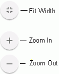

Reports (including tables and charts) can be printed as follows:
Run the report as explained in
In the top-right corner of the report window, click .
Select the printer, pages to print, and other options. Available options depend on the printer selected and its capabilities. Refer to your printer documentation for details on the selections.
Review the print preview. Scroll to view all pages; point to the report to activate the following buttons on the right side of each page. Click the buttons as needed to view the preview.

When ready, click Print.